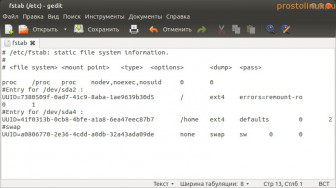
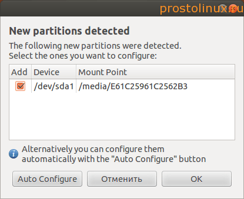
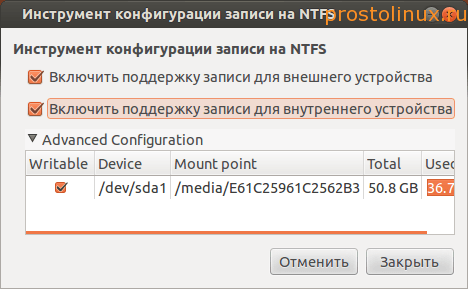
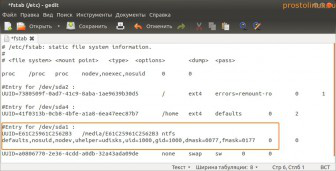
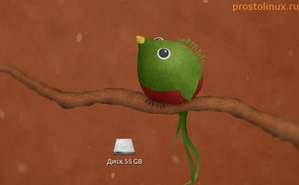

Возможно у вас, как и у меня, на компьютере стоит две операционных системы: Windows и Linux. Я уже писал, как установить Windows и Linux на одном компьютере, и если делать всё правильно, то ntfs разделы Windows автоматически монтируются в Linux.
Но лично я уж не раз сталкивался с ситуацией, когда я или забывал при установке Linux указать точки монтирования на разделы ntfs, или после переустановки Windows и восстановления GRUB, разделы Windows уже не подключались автоматически, так как менялся их UUID.
Если у вас такая же проблема и вы хотите, чтобы разделы ntfs у вас подключались автоматически, то читайте дальше, так как именно в этой статье вы найдёте простое решение, как автоматически подключить раздел ntfs в Linux?

Для начала немного теории. В Linux есть текстовый файл, в который прописываются все устройства, которые должны автоматически монтироваться при загрузке системы. Файл этот вы видите на рисунке выше и находится он в /etc/fstab Чтобы посмотреть его в Linux, наберите в терминале:
sudo gedit /etc/fstab
Как видите, сейчас в fstab Windows раздел не вписан, поэтому ntfs раздел автоматически не монтируется при загрузке. Или он может быть там прописан, но из-за неверного UUID он может не монтироваться, а Linux при загрузке будет просить нажать кнопку S, чтобы система загрузилась. Что же можно сделать и как автоматически подключить раздел ntfs в Linux?
Самый простой способ - это воспользоваться специальной утилитой. Вначале установим её, если она у вас ещё не установлена:
sudo apt-get install ntfs-config
После установки можно просто запустить в терминале команду:
sudo ntfs-config-root
После введения пароля вы увидите вот такое окошко, которое покажет, какие разделы ntfs у вас есть на компьютере.

Поставьте галочку и нажмите кнопку Auto Configure. После этого утилита автоматически смонтирует раздел и внесёт нужные изменения в fstab. Если окно не закроется само, то через какое-то время закройте его принудительно. Далее вашему взору предстанет такое окошко:

Тут можно поставить нужные галочки и потом окно закрыть. Теперь ещё раз посмотрим наш файл fstab:

Как видите, в нём появилась новая запись, а на рабочем столе у меня появился смонтированный ntfs раздел Windows:

Вот таким простым способом можно автоматически подключить раздел ntfs в Linux. Никаких сложностей возникнуть не должно, так как в Linux всё очень просто!